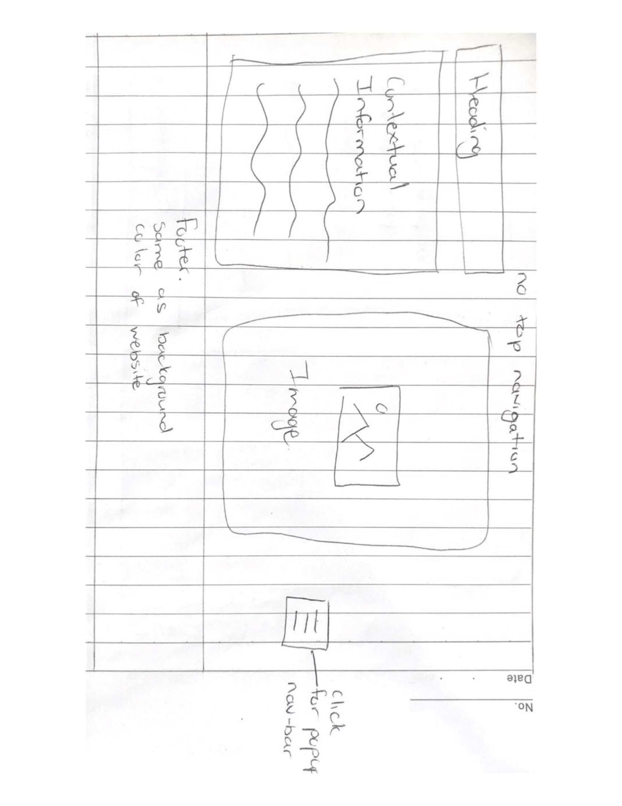

Wireframes
Below i have attached images of the wireframes i have drawn. The first one is how i wish my landing page to look like for the final website. The second one is my current webpage which i think i will probably stick with however because this is still a work in progress some things may change. The last image is of the data visualistaion section and how i structured it.
Below is my chosen color palette which caters to the visually imapaired. The fonts chosen are simple and represent a traditional feel. I did not want to have fancy fonts which may not correspond with the theme of my site and the information represented in it.